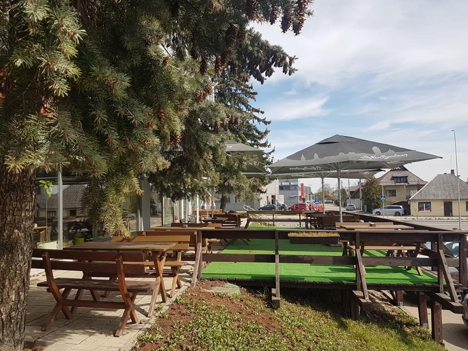

Pietūs restorane ir išsinešimui
Kai norisi skaniai ir sočiai.
GRYN‘as restoranas - sveiki pusryčiai, dienos pietūs ir uždari renginiai.
GRYN‘asSveiki pusryčiai · Dienos pietūs · Uždari renginiaiGRYN‘as restoranas - sveiki pusryčiai, dienos pietūs ir uždari renginiai Aleksote.Kaunas
GRYN‘as virtuvė
Pusryčiams, pietums ir jūsų renginiams
Užsukite sveikų pusryčių, neskubių vėlyvųjų pusryčių ar dienos pietų. Dienos meniu galite rinktis ir išsinešimui. GRYN‘as taip pat kviečia rengti uždaras šventes.
PaskambintiGRYN‘as iš arčiau
Skoniai, dėl kurių verta užsukti.

Laikas jūsų apsilankymui
Uždara šventė GRYN’e
Planuojate uždarą renginį? Aptarkime jūsų progą ir maitinimą telefonu.
Paskambinti